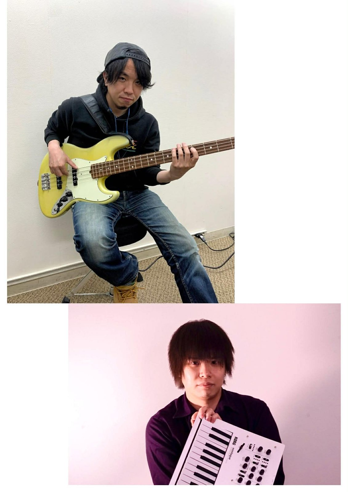

PROFILE
都会の夜に溶け込む、洗練されたサウンド。繊細さと爆発力を併せ持つプレイで、スタンダードからオリジナルまで自在に行き来する。一音ごとに交わされる会話のようなインタープレイが、唯一無二の時間を生み出します。
SHARE
このアーティストを応援しよう。

都会の夜に溶け込む、洗練されたサウンド。繊細さと爆発力を併せ持つプレイで、スタンダードからオリジナルまで自在に行き来する。一音ごとに交わされる会話のようなインタープレイが、唯一無二の時間を生み出します。
このアーティストを応援しよう。